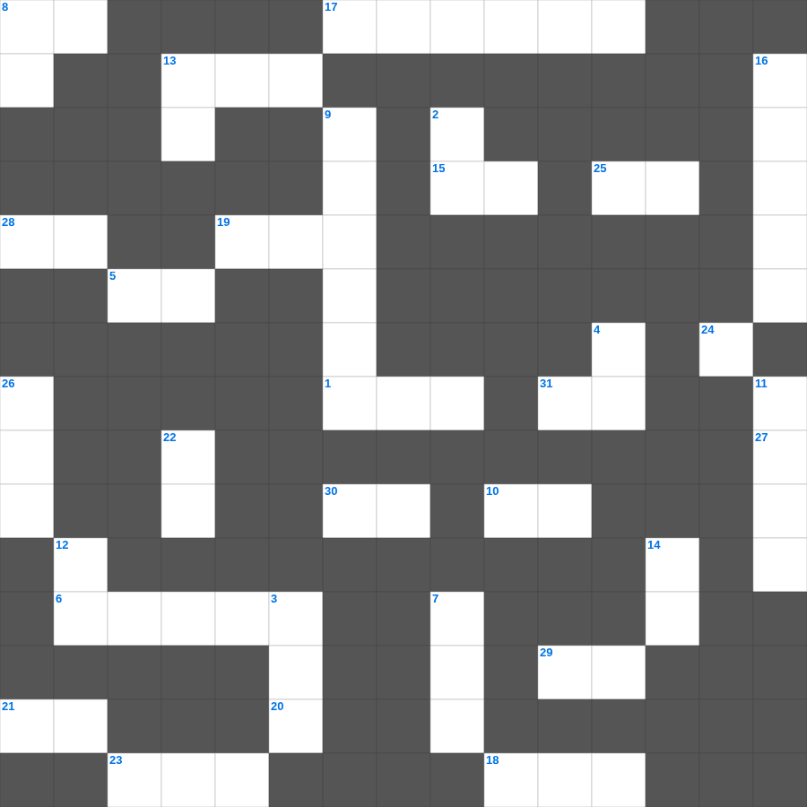

산상수훈: 팔복
오늘은 산상수훈의 주요 내용을 담은 산상수훈 무료 성경퀴즈를 준비했습니다. 총 35개의 힌트가 있으며, 주일학교 교재나 성경공부 자료로 활용하기 좋습니다. 무료로 즐기는 산상수훈 가로세로 퍼즐을 지금 바로 풀어보세요!

📝 가로 힌트
1. 구름 기둥과 이것 기둥
4. 진리의 허리띠와 평안의 복음의 이것
5. 복음을 전하러 외국으로 나가는 일
6. 구하라 그리하면 너희에게 이것을 주실 것이요
8. 다윗이 왕이 되기 전의 직업
10. 성령의 검은 곧 하나님의 이것
13. 솔로몬 성전 건축에 쓰인 고급 나무
15. 예수님이 우리 죄를 대신해 죽으신 은혜
17. 성경 66권을 통칭하는 말
18. 매우 작은 씨앗의 대명사
19. 함께 가져온 물고기의 마리 수
20. 공의를 마르지 않는 이것 같이 흐르게 하라
21. 성령의 열매: 충성, 온유, 이것
23. 여호수아가 요단강을 건널 때 앞세운 것
25. 진리가 너희를 이것케 하리라
27. 오직 정의를 이것 같이 흐르게 할지어다
28. 야곱이 사다리 환상을 본 곳
29. 십계명이 새겨진 것
30. 예수님의 지상 직업
31. 화평하게 하는 자는 복이 있나니 그들이 하나님의 이것이라 일컬음을 받을 것임이요
📝 세로 힌트
2. 일곱 금 이것 사이에 계신 인자 같은 이
3. 나아만 장군이 문둥병을 고친 강
4. 너는 나 외에는 다른 이것들을 두지 말라
4. 나 외에는 다른 이것들을 네게 두지 말라
7. 이스라엘이 애굽을 탈출한 사건
8. 선한 이것은 양들을 위하여 목숨을 버리거니와
9. 기드온의 용사들이 사용한 도구
11. 요나를 삼켰던 존재
12. 극히 값진 이것 하나
13. 좋은 땅에 떨어진 씨앗은 몇 배의 결실?
14. 데살로니가 사람들이 베레아 사람보다 더 간절히 본 것
16. 엘리야에게 떡을 대접한 사르밧 과자
22. 심령이 가난한 자는 복이 있나니 이것이 그들의 것임이요
24. 하나님께 나아가는 자는 반드시 그가 계신 것과 또한 그가 자기를 찾는 자들에게 이것 주시는 이심을 믿어야 할지니라
26. 예수님이 제자들의 발을 씻기신 일
🏷️ 키워드
산상수훈 무료 성경퀴즈, 산상수훈, 십자가로세로, 성경퀴즈, 말씀퀴즈, 가로세로퍼즐